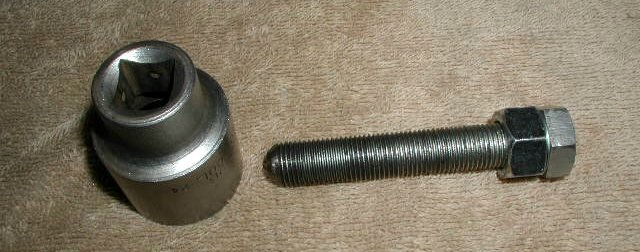
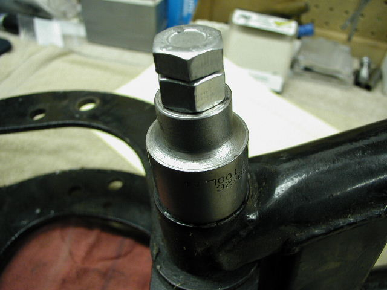
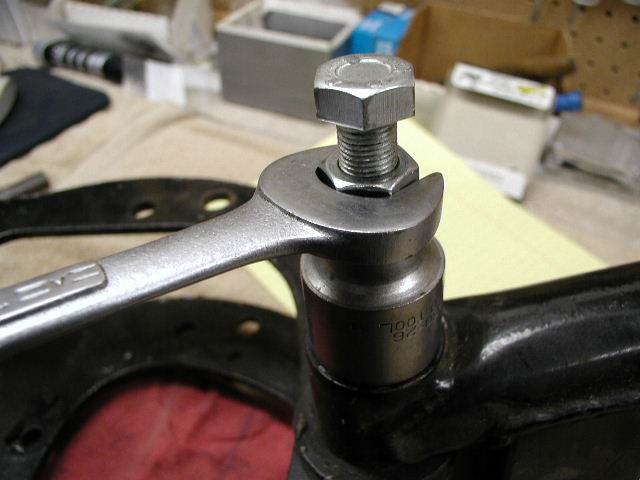
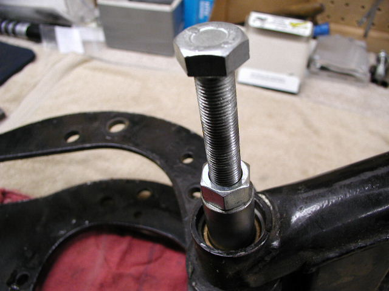

Removing the swinging arm spindle
by Fred Eaton
Summary:
This article covers How to remove the swinging arm spindle and the MK3 welch plugs.
Procedure:
- Remove the securing bolt or pins.
- Pre-MK3 -- There is one 1/4 X 28 bolt threaded into the top of the engine cradle securing the spondle.
- MK3 -- There are two cotter pins holding the spindle. Remove the two nuts on the cotter pins. remove the steel and fiber washers from both pins.
Remove the two rubber plugs. With a drift, gently tap the pins from the threaded side through the rear engine mount.
- Remove the end caps or welch plugs.
- Removing the spindle.
- Each spindle is threaded on one end to accept a 1/2" x 20 bolt.
You can make a puller by taking a 1/2" drive socket the same diameter as the end of the swinging arm, a 1/2 x 20 nut and a 1/2 x 20 bolt.
If you have the factory Norton puller 06-4297, the puller bolt is 1/2 x 20.

- Thread the nut to the end of the bolt and thread the bolt through the socket into the end of the spindle.

- Tighten the nut down on the socket and the spindle will be pulled out until it bottoms out on the inside of the socket.

- Remove the bolt and socket, thread the bolt back into the spindle using the nut as a jam nut against the spindle.
You should be able to pull the spindle all the way out by twisting and pulling on the bolt.

- For very tight or rusted spindles, apply penetrating oil and let stand over night. If still tight, add heat.
Return to Old Britts home page
…… Return to Technical Articles
This page was written and designed by F. H. Eaton
& Associates if you have any questions or comments please
contact us at info@fheaton.com